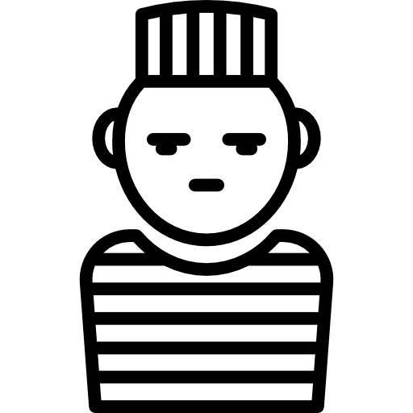

Objetivos y justificación

Pregunta problema y objetivos
Pregunta problema
Dado la introducción anterior sobre las condiciones de vida en los centros de reclusión mexicanos, nos surgieron varias preguntas sobre esta situación, algunas de estas fueron: ¿será que estas condiciones son las mismas independientemente de alguna característica tal como el sexo, orientación sexual, religión, edad, nivel socioecónomico o crimen cometido?
Estas preguntas nos llevaron a la siguiente pregunta problema:
¿Qué diferencias existen en las condiciones de vida que los centros de reclusión mexicanos brindan para las personas según sus condiciones demográficas, económicas y delictivas?
Para responder esta pregunta, se proponen el siguiente objetivo general y objetivos especificos para el estudio.
Objetivo General
Determinar si existe alguna relación entre las condiciones de vida en los centro penintenciarios y las características demográficas, socioeconómicas y delictivas entre las personas privadas de la libertad que fueron consideradas en la Encuesta Nacional de la Población Privada de la Libertad (ENPOL) realizada en México durante el año 2021.
Objetivos específicos
Identificar las variables representativas de la población privada de la libertad que sean de interés para el desarrollo del estudio.
Recodificar las variables de interés en la base de datos, para dar una mayor legilibilidad e interpretación a los datos y análisis que se realizarán a lo largo del estudio.
Realizar una descripción univariada de la población de estudio en cada una de las variables de interés, sin considerar las posibles relaciones que puedan existir entre las variables.
Utilizar métodos descriptivos multivariados entre las variables con el fin de identificar patrones que indiquen una posible relación entre las variables.
Comparar los resultados obtenidos con otros hechos y datos similares dados por la literatura e investigaciones anteriores.
Determinar si los hallazgos del estudio son válidos y concuerdan con hechos observados en la sociedad.
Justificación
La crisis carcelaria que afecta a varios países de América Latina, es un fenómeno multifacético que impacta no solo en la población privada de la libertad, sino también en la sociedad en su conjunto. El incremento en la población carcelaria, el hacinamiento, la falta de recursos básicos y los episodios de violencia dentro de los centros penitenciarios son indicadores alarmantes de una situación que requiere atención urgente.
Ante este panorama, se tiene la idea de estudiar en profundidad las relaciones entre las condiciones de vida dentro de los centros penitenciarios y diversas características demográficas, socioeconómicas y delictivas de la población carcelaria. Los hallazgos de este estudio pueden brindar un nuevo panorama de cómo está distribuida la población privada de la libertad y una nueva perspectiva sobre la crisis carcelaria previamente mencionada.
Para este estudio, se utilizarán los datos abiertos publicados por el INEGI sobre la Encuesta Nacional de la Población Privada de la Libertad (ENPOL), la cual consideraremos una fuente de datos confiable y actualizada para abordar estas interrogantes.
Referencias
- Pardo, C. (2020). Estadística descriptiva multivariada. Universidad Nacional de Colombia.
- Torres, C. (2024).Material de acompañamiento, Estadística descriptiva multivariada. Quarto Web Site
- Encuesta Nacional de la Población Privada de la Libertad (ENPOL) 2021. Instituto Nacional de Estadística y Geografía. https://www.inegi.org.mx/. Datos accesidos el día 20 de Febrero de 2024.
- Encuesta Nacional de la Población Privada de la Libertad (ENPOL) 2016. Instituto Nacional de Estadística y Geografía. https://www.inegi.org.mx/. Datos accesidos el día 3 de Marzo de 2024.